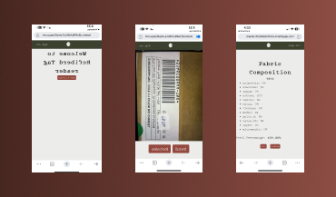
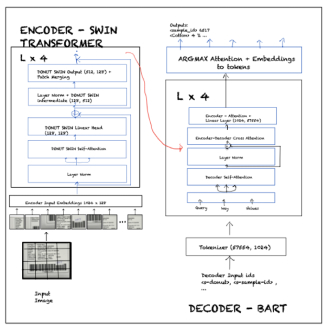
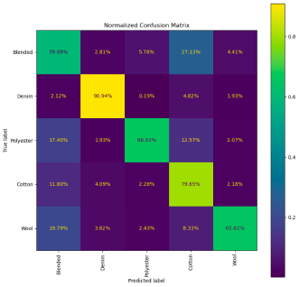
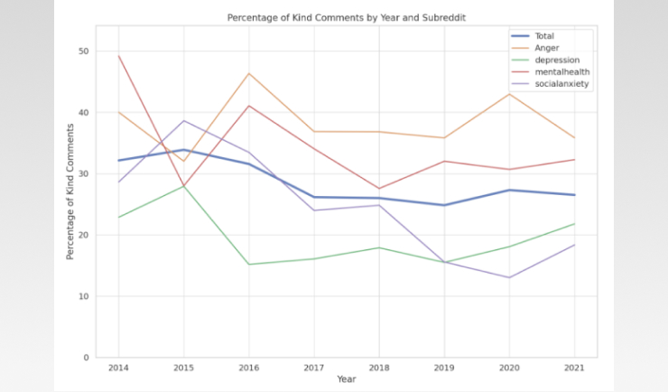
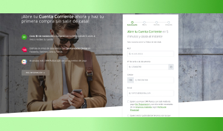
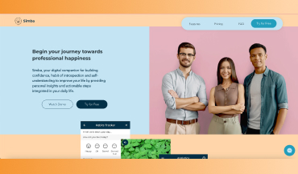
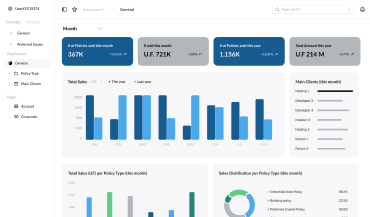

Portfolio
Check it out some of the projects I've participated in the last few years.
Capstone Final Project (2024)
Tag Reader and automatic labeling for Refiberd. Trophy Winner of the Sarukkai Social Impact Award.
 Refiberd, an early-stage start-up in the textile recycling space, is using its proprietary supervised learning algorithm to automate and improve the accuracy of end-of-life fabric sorting processes. The model is only as good as their training set but gets better with each new sample it is trained on. However, the label capture process is manual and requires 50% of their workforce to conduct tedious dictation into an Excel spreadsheet.
Our team built a web-based application that automates the label capture process, which expedites and reduces the resources required to expand this portion of their training dataset by 50%. Our intervention was implemented using Amazon Web Services, and a pre-trained model was used to create our proprietary model to identify the relevant text in the tags.
I was responsible for the webpage development where the solution was hosted.
Computer Vision for Fabric Identification (2024)
Leveraging computer vision techniques to solve complex images challenges.
 Final project for Computer Vision course where we focused on finding the best features and prediction models to identify textiles. The dataset was of 23,600 images of 200x200px representing images of blended textiles, cotton, denim, polyester and wool. We created different features for these images including HOG, Normals, LOG, BOVW, among others.
 After the PCA process, we performed different classification models to predict the fabric type being SVM the one that performed better with scalars of all the features we created. (see top image.)
After the PCA process, we performed different classification models to predict the fabric type being SVM the one that performed better with scalars of all the features we created. (see top image.)
Analyzing Kindness in Reddit (2023)
Using Natural Language Processing techniques to interpret comments in Reddit.
 For this project, we selected particular subreddits to identify if kindness has changed through time. Using Natural Language Processing, we classified the different posts as kind and not kind and we analyzed the results throughout the years. We used our trained BERT classifier (batch size = 32, max tokens = 256) to predict the Kind vs Not Kind labels for all the 5942 responses.
While our top accuracy score is not extremely high and requires further development, with 86% we can obtain a strong enough indication of the actual levels of kindness we see in our larger dataset of Reddit responses, showing that kindness has declined in general and had some increase since COVID.
Checking Account Opening 100% online (2021-2022)
Real product delivered to Banco Falabella's prospect customers.
 As Product Owner, the goal was to develop the whole experience of opening checking accounts 100% online using what had been done for the credit card experience and connect the backend services for the checking accounts as they were for the branch opening. I had a deadline of 3-4 months and a team of 5 people to do this. We were able to deliver the MVP on time.
The rest of my time as a PO, I continued adding new features, improving look and feel and performance of the web applications and embedding the flow in the app.
Simba App (2022)
Development of a product from 0 to 1
 On this project, we were infused with the entrepreneurial spirit and developed a product from 0 to 1 through a rigorous but open-minded process.
- We started with problem interviews that made us shift from what we thought the problem was to a different one.
- We created our mock-up and no-code app with Adalo.
- We tested with real users from around the world.
- We created and presented our Pitch.
The product is an app for leadership and team members to track their satisfaction and energy. This app will uncover patterns and reveal insights to each team member and to the manager in general, with actionable steps so they can take action to increase overall satisfaction and well-being in the workspace.
We earned 2nd place amongst the participants, showing that our idea was valuable.
Micelio UX Design (2023)
Landing of an idea with a visual product
 The project was to design the main dashboard for a service provider of insurance for companies. This is a start-up based in Chile called Micelio, which is trying to create a new SaaS with the objective of consolidating all the information about insurance taken for each company and/or society and the connection between different societies/companies.